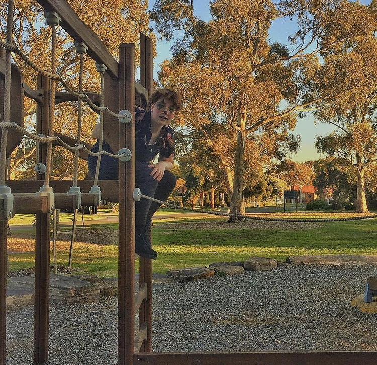
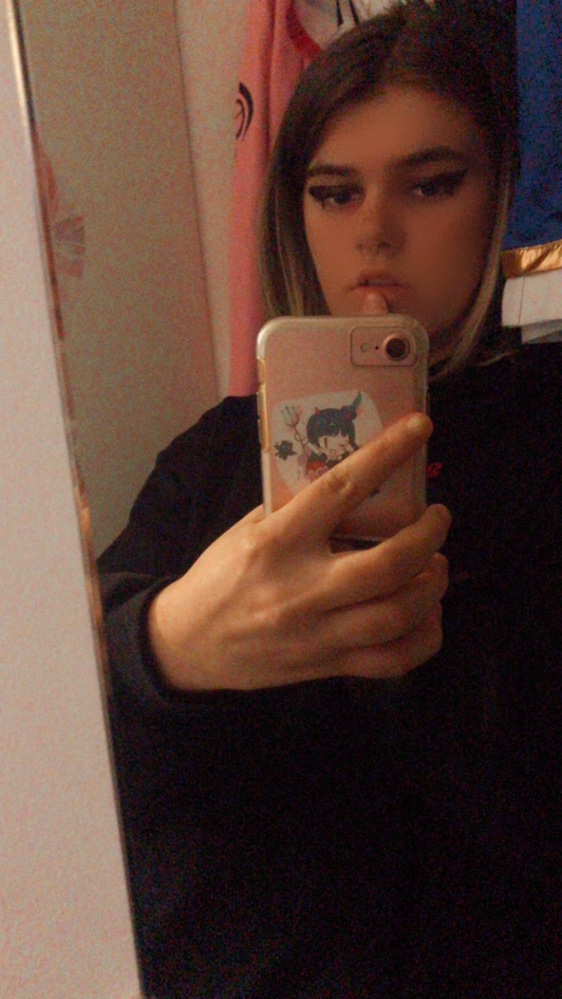
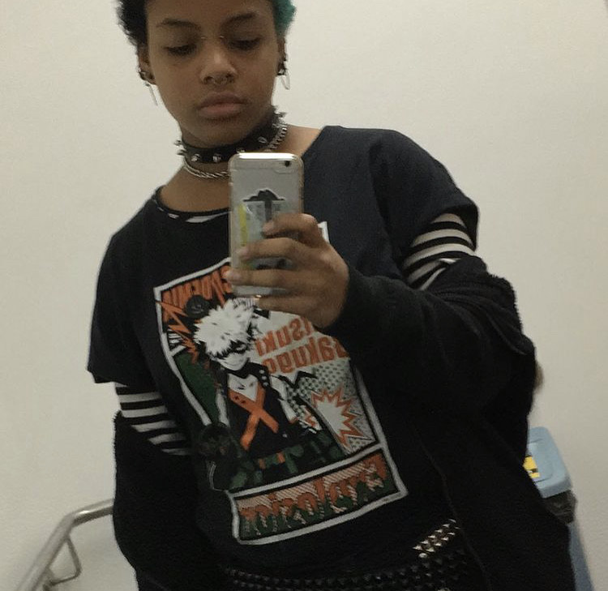

performers
carson
Pronouns: any/it
Age: 16
Position: Singer and Performer
Performed in: all

The gremlin clown, the chaotic and responsible one who is also loud and quiet
trix
Pronouns: they/bun
Position: performer
Performed in: Real music
Age: 16

The idol clown, probably a lolita but dresses gothish but is always tired.
ash
Pronouns: he/they
Position: Performer
Performed in: All
Age: 17

The death clown, clear weeb but also has lots of bottle caps for aesthetic sake.